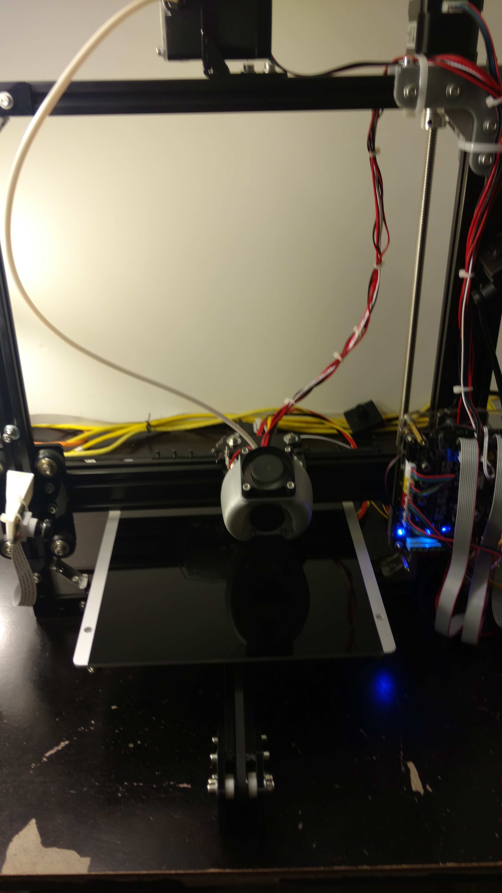
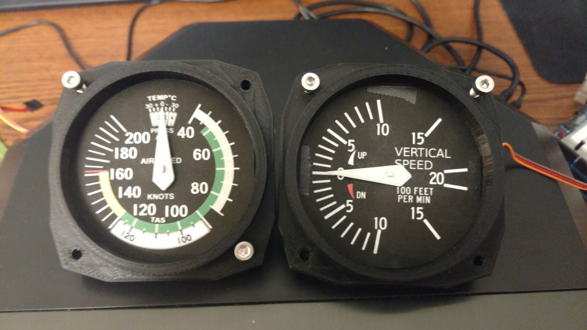

My current progress building the Cessna 172 cockpit replica.
The Printer
I'll be using my TEVO Tarantula i3 pictured below to create all the 3D printed parts.
Gauges
Gears tend to be difficult for 3D printers to accurately print out, so I started by printing the gears to be
sure that I had the printer's settings just right. Most important is the first layer printed out. In the image
below the large gear on the bottom and small gear to the right were printed with the print head too far away
from the printbed so they didn't come out smooth. After some adjustments I re-printed the gears and they came
out much better.

Having successfully printed a set of gears, I moved on to print the gauge itself. Made sure to watch the first
so that I can stop the print if something goes wrong.

After some assembly, and using a normal 2D printer and some cardstock to print the gauge faces, I have a couple
of gauges that look pretty realistic.

Below is a video of the gauges functioning. I need to come up with a better power source for the servos, the
jitter of the yoke in the simulator is being caused by the USB port not supplying enough power to run everything.
My son saw the gauges and immediately wanted to play with them. Don't worry, I let him fly after I finished
recording the video. He thought it was the coolest thing when they moved around by themselves. They still need
some calibration work, but at least the basic functionality is there!
Switches
One obvious thing any cockpit needs is a bunch of switches. Its a whole lot more fun flipping real switches
rather than clicking certain spots to make something happen. So I ordered some switches and modeled a panel
to mount them in. I'll include the panel's 3D model soon, I need to make a few adjustments yet. Anyway, here
is a video of some switches that actually work.